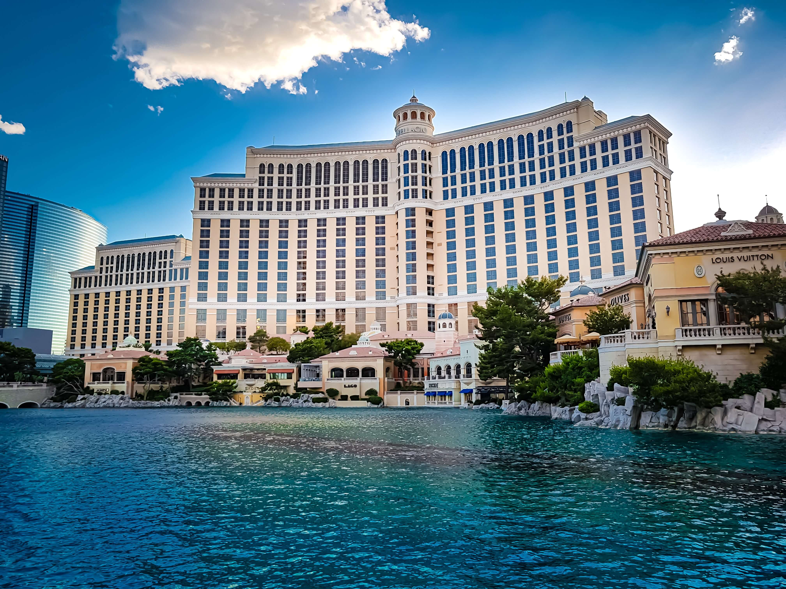
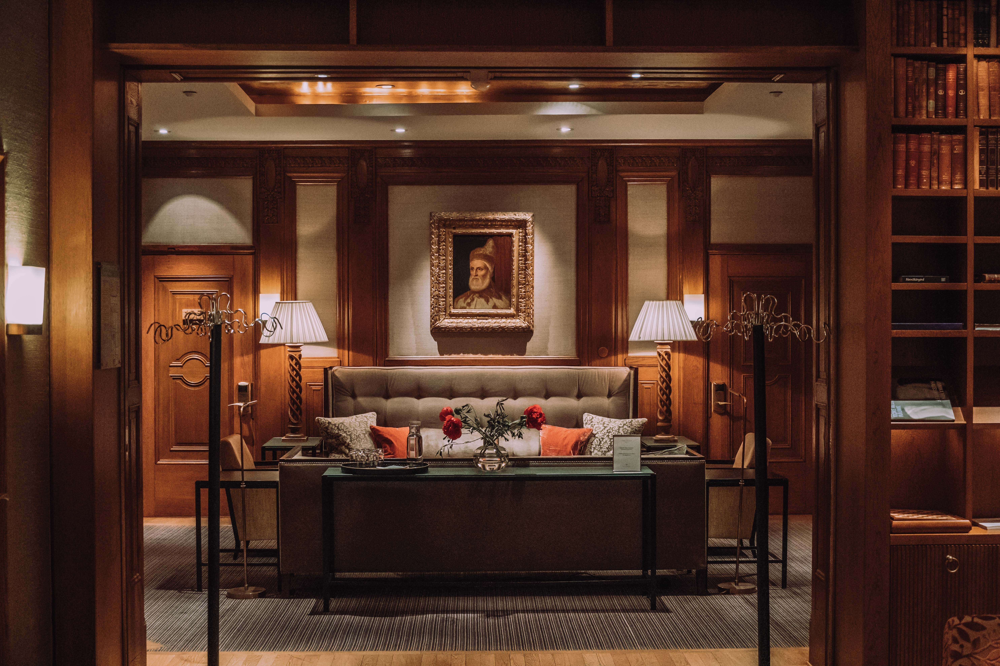
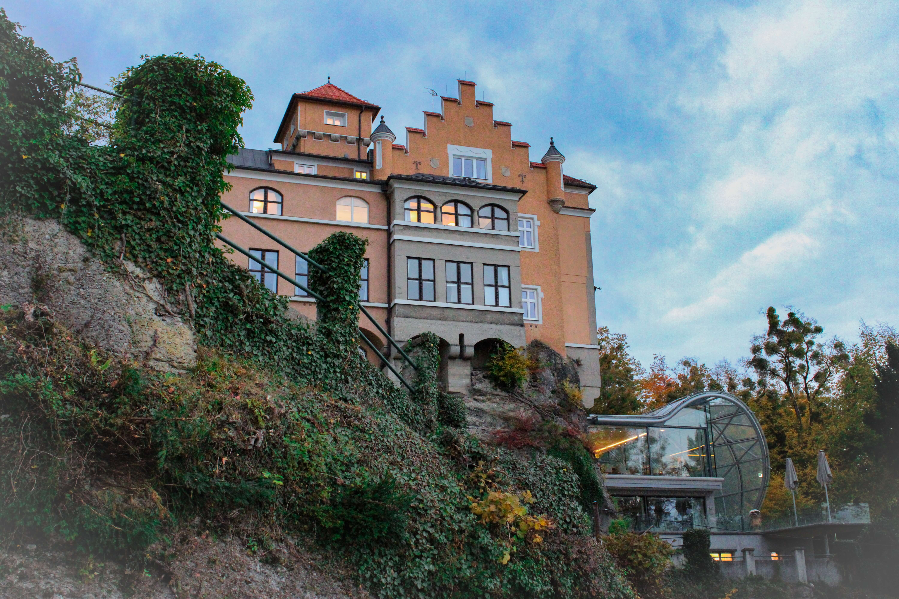
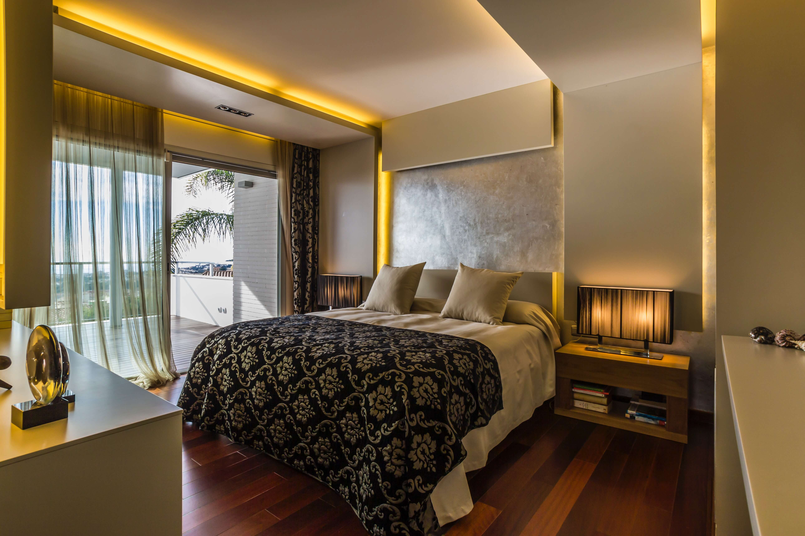
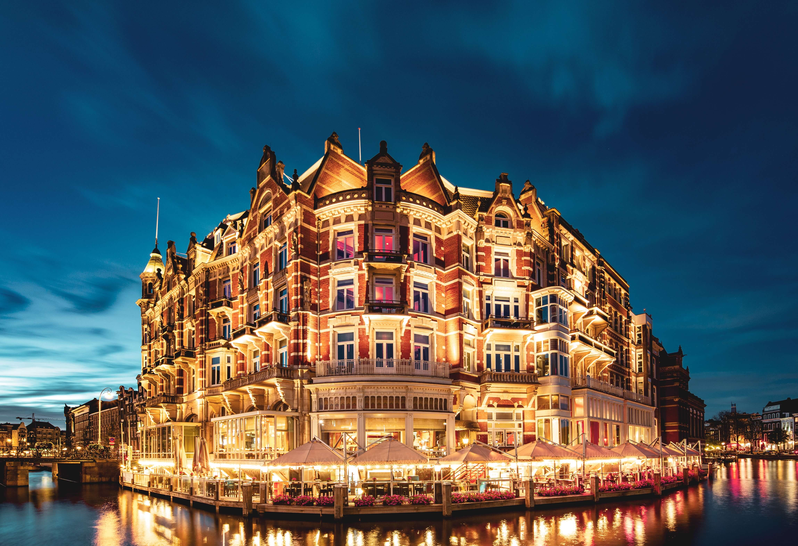
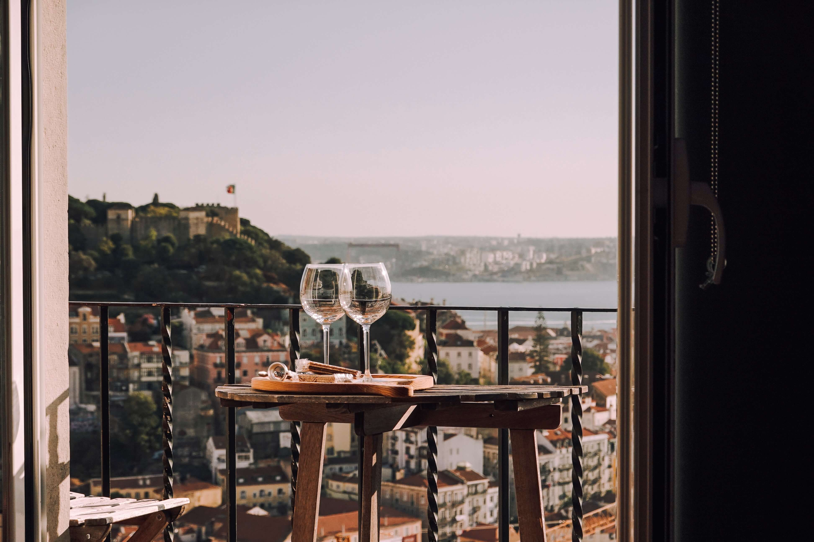
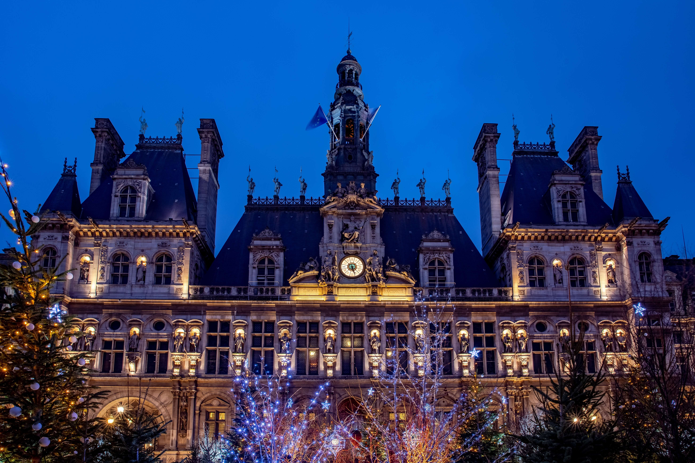
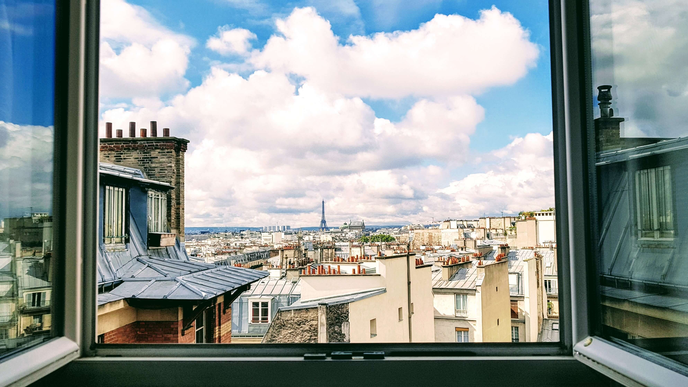

4 romantic hotels in Europe for couples on a Valentine's Day getaway
2 Feb 2023
Travel

Get ready to fall in love all over again.
Here are few better ways to show your very special someone how much you love them than by whisking them away.
Somewhere where the scenery is stunning, the history tangible, the culture vibrant and the cuisine sublime ‒ in other words, where romance just comes naturally.
Although February isn't the warmest season in Europe, there are plenty of roaring fires to snuggle by, selfies to snap in the snow and glorious sights to behold. Getting away before travellers return in vast numbers this spring and summer is also a seriously smart move.
So dust off the Spanish guitar, clench a rose between your teeth and serenade your beloved at these 5 unforgettable European destinations to spend Feb 14.
CIRAGAN PALACE KEMPINSKI, ISTANBUL, TURKEY

Ahhh, Istanbul. The perfumes, the flavours, the souks, the colours. Few cities are as enchanting, beguiling or romantic and few hotels move the heart like Ciragan Palace Kempinski, the only Ottoman imperial palace on the famed Bosporus which separates Europe from Asia.

The expansive 310-room resort hotel is offering a luxurious getaway where you may want to avail of their spa and pool before sitting down to a seven-course dinner at their Michelin recommended Tugra restaurant. You'll be serenaded with live music before taking special gifts back to your Grand Deluxe room with a Bosporus view and waking to a sumptuous breakfast served in-room.
ASHFORD CASTLE, IRELAND

While you won't be guaranteed days of endless sunshine in February, Ireland more than makes up for it in atmospheric beauty, especially when you stay in a castle. Dating back to the 13th century, Ashford Castle in Ireland’s County Mayo is a stunning retreat set in 350 acres of ancient woodlands and lakes.

The experience and feel is definitely more Downton Abbey than Game of Thrones, thanks to impeccable service throughout the 83 elegant rooms and suites, six restaurants and three bars. Try your hand at archery, clay pigeon shooting or even falconry before a stroll through their woods. Then it's back for luxurious spa treatments, champagne by the roaring fireside, a seven-course dinner and a retreat to your suite in a castle turret.
MATILD PALACE, BUDAPEST, HUNGARY

Budapest is one of Europe's most underrated cities, one where the romance factor is high thanks to stunning Art Nouveau buildings, Danube cruises and more. Matild Palace sits just a stone's throw from the mighty river and this year it is offering guests a special Valentine's Cabaret. If swing and jazz are your thing, then there's nowhere better to be as the evening takes guests back to the 1920's with live music and dancing ‒ while you're also encouraged to hit the dancefloor and join them.

Dinner includes everyone's favourite aphrodisiac of oysters, venison fillet and a dessert intriguingly called 'red lips' to seal the evening with a kiss. Retreat for a nightcap to The Duchess, their decadent rooftop bar for romantic cocktails overlooking the domes and spires of this dazzling city's skyline.
HOTEL DAME DES ARTS, PARIS, FRANCE

No romantic escapes in Europe can be complete without the City of Light, Paris. While there are countless fabulous places to stay, a new addition to the city's hotel landscape ticks all the boxes. The 109-room Hotel Dame des Arts is perfectly located in Saint Germain on the chic Left Bank, just a short stroll from the Seine and Notre Dame.

Unusually for Paris, many of the rooms boast stellar views over iconic rooves and towards Sacre Coeur, while the 360-degree views from the rooftop bar have to be seen to be believed. The Penthouse Suite Eiffel View is where you'll want to sleep, but chances are you'll be glued to the window or braving the balcony.
Photography retrieved from Unsplash
Content retrieved from Channel News Asia (CNA Luxury)